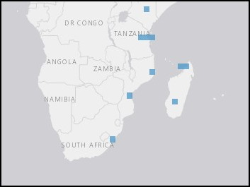

The Roman 2nd sailed south along the West Coast of Africa and rounded the Cape of Good Hope in early December, 1857.

The marbled cone snail is dispersed throughout the Indian Ocean and South Pacific, from South Africa's coast to Fiji.
More information on the taxa and distribution of Conus marmoreus is available through OBIS Mapper here.